midi_file_str <- system.file("extdata", "test_midi_file.mid", package = "pyramidi")
midifile <- mido$MidiFile(midi_file_str)
ticks_per_beat <- midifile$ticks_per_beatNow we can load the information of the midifile into a dataframe:
dfc = miditapyr$midi_to_df(midifile)
head(dfc, 20)
#> i_track meta msg
#> 1 0 TRUE track_name, drum-t1-1-t1, 0
#> 2 0 FALSE note_on, 0, 43, 72, 9
#> 3 0 FALSE note_on, 0, 39, 64, 9
#> 4 0 FALSE note_on, 0, 36, 101, 9
#> 5 0 TRUE set_tempo, 666666, 0
#> 6 0 TRUE time_signature, 4, 4, 24, 8, 0
#> 7 0 FALSE note_off, 240, 43, 72, 9
#> 8 0 FALSE note_off, 0, 39, 64, 9
#> 9 0 FALSE note_off, 0, 36, 101, 9
#> 10 0 FALSE note_on, 240, 42, 101, 9
#> 11 0 FALSE note_on, 0, 38, 101, 9
#> 12 0 FALSE note_on, 240, 43, 64, 9
#> 13 0 FALSE note_off, 0, 42, 101, 9
#> 14 0 FALSE note_off, 0, 38, 101, 9
#> 15 0 FALSE note_off, 240, 43, 64, 9
#> 16 0 FALSE note_on, 0, 36, 101, 9
#> 17 0 FALSE note_off, 240, 36, 101, 9
#> 18 0 FALSE note_on, 240, 43, 60, 9
#> 19 0 FALSE note_on, 0, 42, 101, 9
#> 20 0 FALSE note_off, 240, 43, 60, 9This dataframe contains the columns of the track index i_track, meta (whether the midi event is a note event), and msg containing named lists of further midi event information.
The MidiFile() function of mido also yields the ticks_per_beat of the file:
ticks_per_beat
#> [1] 960The miditapyr$tidy_df() function transforms the msg column of the dataframe to a wide format, where every new column name corresponds to the names in the lists in msg (like tidyr::unnest_wider()):
df <- miditapyr$tidy_df(dfc) %>% as_tibble()
head(df, 20)
#> # A tibble: 20 × 13
#> i_track meta type name time note velocity channel tempo numerator
#> <dbl> <lgl> <chr> <list> <dbl> <dbl> <dbl> <dbl> <dbl> <dbl>
#> 1 0 TRUE track_name <chr … 0 NaN NaN NaN NaN NaN
#> 2 0 FALSE note_on <dbl … 0 43 72 9 NaN NaN
#> 3 0 FALSE note_on <dbl … 0 39 64 9 NaN NaN
#> 4 0 FALSE note_on <dbl … 0 36 101 9 NaN NaN
#> 5 0 TRUE set_tempo <dbl … 0 NaN NaN NaN 666666 NaN
#> 6 0 TRUE time_sign… <dbl … 0 NaN NaN NaN NaN 4
#> 7 0 FALSE note_off <dbl … 240 43 72 9 NaN NaN
#> 8 0 FALSE note_off <dbl … 0 39 64 9 NaN NaN
#> 9 0 FALSE note_off <dbl … 0 36 101 9 NaN NaN
#> 10 0 FALSE note_on <dbl … 240 42 101 9 NaN NaN
#> 11 0 FALSE note_on <dbl … 0 38 101 9 NaN NaN
#> 12 0 FALSE note_on <dbl … 240 43 64 9 NaN NaN
#> 13 0 FALSE note_off <dbl … 0 42 101 9 NaN NaN
#> 14 0 FALSE note_off <dbl … 0 38 101 9 NaN NaN
#> 15 0 FALSE note_off <dbl … 240 43 64 9 NaN NaN
#> 16 0 FALSE note_on <dbl … 0 36 101 9 NaN NaN
#> 17 0 FALSE note_off <dbl … 240 36 101 9 NaN NaN
#> 18 0 FALSE note_on <dbl … 240 43 60 9 NaN NaN
#> 19 0 FALSE note_on <dbl … 0 42 101 9 NaN NaN
#> 20 0 FALSE note_off <dbl … 240 43 60 9 NaN NaN
#> # … with 3 more variables: denominator <dbl>, clocks_per_click <dbl>,
#> # notated_32nd_notes_per_beat <dbl>Except the name column this seems to be the same as
dfc %>% unnest_wider(msg)
#> # A tibble: 268 × 13
#> i_track meta type name time note velocity channel tempo numerator
#> <dbl> <lgl> <chr> <chr> <int> <int> <int> <int> <int> <int>
#> 1 0 TRUE track_na… drum-t… 0 NA NA NA NA NA
#> 2 0 FALSE note_on <NA> 0 43 72 9 NA NA
#> 3 0 FALSE note_on <NA> 0 39 64 9 NA NA
#> 4 0 FALSE note_on <NA> 0 36 101 9 NA NA
#> 5 0 TRUE set_tempo <NA> 0 NA NA NA 666666 NA
#> 6 0 TRUE time_sig… <NA> 0 NA NA NA NA 4
#> 7 0 FALSE note_off <NA> 240 43 72 9 NA NA
#> 8 0 FALSE note_off <NA> 0 39 64 9 NA NA
#> 9 0 FALSE note_off <NA> 0 36 101 9 NA NA
#> 10 0 FALSE note_on <NA> 240 42 101 9 NA NA
#> # … with 258 more rows, and 3 more variables: denominator <int>,
#> # clocks_per_click <int>, notated_32nd_notes_per_beat <int>In the midi format, time is treated as relative increments between events (measured in ticks). In order to derive the total time passed, you can use the function tab_measures():
dfm <- tab_measures(df, ticks_per_beat) %>%
# create a variable `track` with the track name (in order to have it in the plot below)
mutate(track = ifelse(purrr::map_chr(name, typeof) != "character",
list(NA_character_),
name)) %>%
unnest(cols = track) %>%
fill(track)
dfm
#> # A tibble: 268 × 19
#> i_track meta type name time note velocity channel tempo numerator
#> <dbl> <lgl> <chr> <list> <dbl> <dbl> <dbl> <dbl> <dbl> <dbl>
#> 1 0 TRUE track_name <chr … 0 NaN NaN NaN NaN NaN
#> 2 0 FALSE note_on <dbl … 0 43 72 9 NaN NaN
#> 3 0 FALSE note_on <dbl … 0 39 64 9 NaN NaN
#> 4 0 FALSE note_on <dbl … 0 36 101 9 NaN NaN
#> 5 0 TRUE set_tempo <dbl … 0 NaN NaN NaN 666666 NaN
#> 6 0 TRUE time_sign… <dbl … 0 NaN NaN NaN NaN 4
#> 7 0 FALSE note_off <dbl … 240 43 72 9 NaN NaN
#> 8 0 FALSE note_off <dbl … 0 39 64 9 NaN NaN
#> 9 0 FALSE note_off <dbl … 0 36 101 9 NaN NaN
#> 10 0 FALSE note_on <dbl … 240 42 101 9 NaN NaN
#> # … with 258 more rows, and 9 more variables: denominator <dbl>,
#> # clocks_per_click <dbl>, notated_32nd_notes_per_beat <dbl>, ticks <dbl>,
#> # t <dbl>, m <dbl>, b <dbl>, i_note <int>, track <chr>This function adds further columns:
You can split the dataframe in two by whether the events are meta or not:
df_meta %>% as_tibble()
#> # A tibble: 8 × 16
#> i_track meta type name time tempo numerator denominator clocks_per_click
#> <dbl> <lgl> <chr> <lis> <dbl> <dbl> <dbl> <dbl> <dbl>
#> 1 0 TRUE track… <chr… 0 NaN NaN NaN NaN
#> 2 0 TRUE set_t… <dbl… 0 666666 NaN NaN NaN
#> 3 0 TRUE time_… <dbl… 0 NaN 4 4 24
#> 4 0 TRUE end_o… <dbl… 1 NaN NaN NaN NaN
#> 5 1 TRUE track… <chr… 0 NaN NaN NaN NaN
#> 6 1 TRUE end_o… <dbl… 1 NaN NaN NaN NaN
#> 7 2 TRUE track… <chr… 0 NaN NaN NaN NaN
#> 8 2 TRUE end_o… <dbl… 1 NaN NaN NaN NaN
#> # … with 7 more variables: notated_32nd_notes_per_beat <dbl>, ticks <dbl>,
#> # t <dbl>, m <dbl>, b <dbl>, i_note <int>, track <chr>
df_notes %>% as_tibble()
#> # A tibble: 260 × 13
#> i_track meta type time note velocity channel ticks t m b
#> <dbl> <lgl> <chr> <dbl> <dbl> <dbl> <dbl> <dbl> <dbl> <dbl> <dbl>
#> 1 0 FALSE note_on 0 43 72 9 0 0 0 0
#> 2 0 FALSE note_on 0 39 64 9 0 0 0 0
#> 3 0 FALSE note_on 0 36 101 9 0 0 0 0
#> 4 0 FALSE note_off 240 43 72 9 240 0.167 0.25 1
#> 5 0 FALSE note_off 0 39 64 9 240 0.167 0.25 1
#> 6 0 FALSE note_off 0 36 101 9 240 0.167 0.25 1
#> 7 0 FALSE note_on 240 42 101 9 480 0.333 0.5 2
#> 8 0 FALSE note_on 0 38 101 9 480 0.333 0.5 2
#> 9 0 FALSE note_on 240 43 64 9 720 0.500 0.75 3
#> 10 0 FALSE note_off 0 42 101 9 720 0.500 0.75 3
#> # … with 250 more rows, and 2 more variables: i_note <int>, track <chr>Each note in the midi file is characterized by a note_on and a note_off event. In order to generate a piano roll plot with ggplot2, we need to tidyr::pivot_wider() those events. This can be done with the function widen_events():
df_not_notes <-
df_notes %>%
dplyr::filter(!stringr::str_detect(.data$type, "^note_o[nf]f?$"))
df_notes_wide <-
df_notes %>%
dplyr::filter(stringr::str_detect(.data$type, "^note_o[nf]f?$")) %>%
# tab_measures(df_meta, df_notes, ticks_per_beat) %>%
widen_events() %>%
left_join(pyramidi::midi_defs)
#> Joining, by = "note"
df_notes_wide
#> # A tibble: 130 × 19
#> i_track meta note channel i_note track time_note_on time_note_off
#> <dbl> <lgl> <dbl> <dbl> <int> <chr> <dbl> <dbl>
#> 1 0 FALSE 43 9 1 drum-t1-1-t1 0 240
#> 2 0 FALSE 39 9 1 drum-t1-1-t1 0 0
#> 3 0 FALSE 36 9 1 drum-t1-1-t1 0 0
#> 4 0 FALSE 42 9 1 drum-t1-1-t1 240 0
#> 5 0 FALSE 38 9 1 drum-t1-1-t1 0 0
#> 6 0 FALSE 43 9 2 drum-t1-1-t1 240 240
#> 7 0 FALSE 36 9 2 drum-t1-1-t1 0 240
#> 8 0 FALSE 43 9 3 drum-t1-1-t1 240 240
#> 9 0 FALSE 42 9 2 drum-t1-1-t1 0 0
#> 10 0 FALSE 43 9 4 drum-t1-1-t1 240 240
#> # … with 120 more rows, and 11 more variables: velocity_note_on <dbl>,
#> # velocity_note_off <dbl>, ticks_note_on <dbl>, ticks_note_off <dbl>,
#> # t_note_on <dbl>, t_note_off <dbl>, m_note_on <dbl>, m_note_off <dbl>,
#> # b_note_on <dbl>, b_note_off <dbl>, note_name <fct>In the new format, the data has half the number of rows. The columns m, b, t, ticks, time and velocity are each replaced by two columns with the suffix _note_on and _note_off.
Now we have the midi data in the right format for the piano roll plot:
df_notes_wide %>%
ggplot() +
geom_segment(
aes(
x = m_note_on,
y = note_name,
xend = m_note_off,
yend = note_name,
color = velocity_note_on
)
) +
# each midi track is printed into its own facet:
facet_wrap( ~ track,
ncol = 1,
scales = "free_y") +
guides(color=guide_colorbar(title="Note velocity")) +
labs(
title = "Piano roll of the note events in the midi file",
subtitle = "Only notes played are shown."
) +
xlab("Measures") +
scale_x_continuous(breaks = seq(0, 16, 4),
minor_breaks = 0:16) +
scale_colour_gradient() +
theme_minimal()
The new format also allows to easily manipulate the midi data. For instance, let’s put the volume (called velocity in midi) of the first beat in every bar to the maximum (127), and to half of its original value otherwise:
df_notes_wide_mod <- df_notes_wide %>%
mutate(
velocity_note_on = ifelse(
# As it's a 4/4 beat, the first beat of each bar is a multiple of 4:
b_note_on %% 4 == 0,
127,
velocity_note_on / 2
)
)Let’s compare the modified value to the original one:
df_notes_wide %>%
select(b_note_on, velocity_note_on) %>%
bind_cols(
new = df_notes_wide_mod$velocity_note_on
)
#> # A tibble: 130 × 3
#> b_note_on velocity_note_on new
#> <dbl> <dbl> <dbl>
#> 1 0 72 127
#> 2 0 64 127
#> 3 0 101 127
#> 4 2 101 50.5
#> 5 2 101 50.5
#> 6 3 64 32
#> 7 4 101 127
#> 8 6 60 30
#> 9 6 101 50.5
#> 10 8 60 127
#> # … with 120 more rowsWith an ifelse() statement, we modified the volume of the midi notes, depending on if they’re the first beat in the measure or not.
Other possible manipulations could be for instance:
round()ing the note_on/note_off times,group_by(floor(m_note_on))-summarize() logic, orgroup_by(floor(m_note_on)) - mutate() logic.We can transform the wide midi data back to the long format:
df_notes_long <- pivot_long_notes(df_notes_wide)We can now add the non note events:
df_midi_out <- merge_long_events(df_meta, df_notes_long, df_not_notes)
#> Joining, by = c("i_track", "i_note", "type", "time", "ticks", "t", "m", "b", "meta")
#> Joining, by = c("i_track", "channel", "note", "i_note", "type", "time", "velocity", "ticks", "t", "m", "b", "meta", "track")
df_midi_out
#> # A tibble: 268 × 14
#> i_track channel note type time velocity meta name tempo numerator
#> <dbl> <dbl> <dbl> <chr> <dbl> <dbl> <lgl> <list> <dbl> <dbl>
#> 1 0 9 43 note_on 0 72 FALSE <NULL> NA NA
#> 2 0 9 39 note_on 0 64 FALSE <NULL> NA NA
#> 3 0 9 36 note_on 0 101 FALSE <NULL> NA NA
#> 4 0 NA NA track_name 0 NA TRUE <chr … NaN NaN
#> 5 0 NA NA set_tempo 0 NA TRUE <dbl … 666666 NaN
#> 6 0 NA NA time_sign… 0 NA TRUE <dbl … NaN 4
#> 7 0 9 43 note_off 240 72 FALSE <NULL> NA NA
#> 8 0 9 39 note_off 0 64 FALSE <NULL> NA NA
#> 9 0 9 36 note_off 0 101 FALSE <NULL> NA NA
#> 10 0 9 42 note_on 240 101 FALSE <NULL> NA NA
#> # … with 258 more rows, and 4 more variables: denominator <dbl>,
#> # clocks_per_click <dbl>, notated_32nd_notes_per_beat <dbl>, track <chr>The time value in midi format is given by the number of ticks passed between events.
Now we can transform the data back to a dataframe of the same format as the one we got with miditapyr$midi_to_df():
dfc2 <-
df_midi_out %>%
# When reticulate converts R dataframes to pandas, there are complications
# with character columns containing missing values.
# repair_reticulate_conversion = TRUE, repairs that in the miditapyr python
# code:
miditapyr$compact_df(repair_reticulate_conversion = TRUE)
as_tibble(dfc2)
#> # A tibble: 268 × 3
#> i_track meta msg
#> <dbl> <lgl> <list>
#> 1 0 FALSE <named list [6]>
#> 2 0 FALSE <named list [6]>
#> 3 0 FALSE <named list [6]>
#> 4 0 TRUE <named list [4]>
#> 5 0 TRUE <named list [4]>
#> 6 0 TRUE <named list [7]>
#> 7 0 FALSE <named list [6]>
#> 8 0 FALSE <named list [6]>
#> 9 0 FALSE <named list [6]>
#> 10 0 FALSE <named list [6]>
#> # … with 258 more rowsAnd we can save it back to a midi file:
miditapyr$df_to_midi(dfc2, ticks_per_beat, "test.mid")